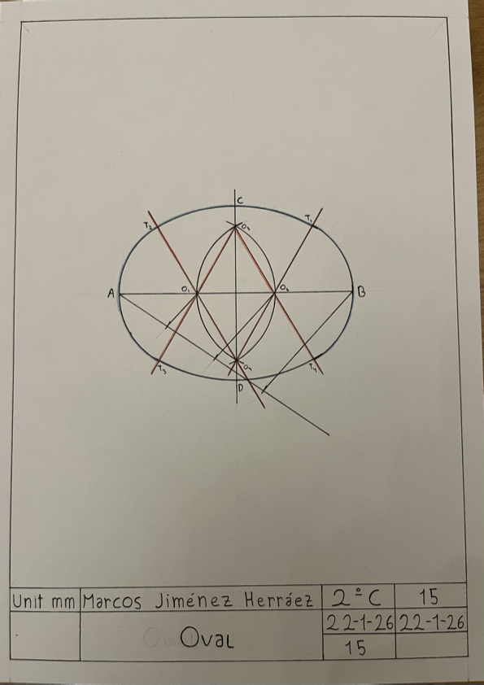

Making an oval.
1. Firstly, I made the frame.
2. Then I made made a segment AB of 100mm, which I made a segment bisector.
3. Using Thales, I got O1 and O2, which I used for making two circles. The point they intersected was called O3 (up) and O4 (down).
4. I joined O1 and O2 with O3 and O4, extending the lines. Making this you form T1, T2, T3 and T4.
5. Then from O2, join T1 and T4. Join T2 and T3 from O2. From O4 join T1 and T2. From O3, join T3 and T4.
In this activity I have learned how to make an oval.